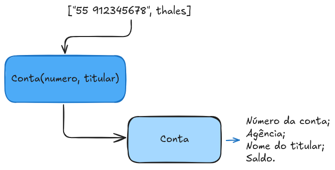

Por que Programar Orientado a Objetos?
Ao desenvolver software, a complexidade é um desafio constante. Conforme nossos projetos crescem, torna-se mais difícil de manter, reutilizar e organizar o código.
Para resolver esses problemas, surgiu um novo jeito de pensar e estruturar o código:
a Programação Orientada a Objetos (POO).
A solução da POO
A principal mudança é que passamos a abstrair objetos do mundo real ao criarmos software, implementando soluções mais intuitivas.
Deixamos de ver os algoritmos como funções isoladas e passamos a organizar eles em torno desses 'objetos'.
Cada objeto tem seus próprios dados e comportamentos que podem ser realizados com esses dados, assim como na vida real.
Por exemplo, se pensamos em um objeto 'Carro': Ele tem cor, marca e ano (atributos), e consegue fazer ações como acelerar e frear (métodos).
E isso funciona mesmo?
Sim! Mas devemos nos apoiar em quatro conceitos fundamentais que funcionam em conjunto para criar um código robusto, flexível e organizado.
Eles são conhecidos como os 4 Pilares da Programação Orientada a Objetos:
Anatomia de uma Classe: Desmontando um Caixa Eletrônico
Se objetos são as 'coisas' do nosso sistema, então uma classe seria um molde que define como essas coisas são construídas.
Nela é determinando quais dados nossos objetos irão armazenar e quais ações poderão executar.
Para entender melhor vamos considerar que temos uma classe Conta, parte de um importante Caixa Eletrônico.
Atributos
Os atributos são as características ou propriedades que definem um objeto.
Eles são as variáveis que armazenam seu estado interno.
No nosso exemplo de uma Conta, os atributos seriam:
- Número da conta;
- Agência;
- Nome do titular;
- Saldo.
O Construtor
O construtor é um método especial, executado no momento em que um novo objeto é criado.
Sua função é inicializar os atributos do objeto, garantindo que ele nasça em um estado válido e consistente.
Por exemplo, o construtor de uma Conta pode receber o número e o titular como parâmetros para já criar o objeto com esses dados preenchidos.
Os Métodos
Os métodos definem o comportamento de um objeto, ou seja, as ações que ele pode executar. Para a nossa Conta, ações comuns seriam:"
- sacar(valor);
- depositar(valor);
- verificarSaldo();
É importante notar que métoros como sacar() não apenas fazem o saque, mas também contém a lógica para verificar se o saldo é suficiente.
A Instância
Se temos um molde com atributos, métodos e um construtor, então podemos finalmente criar objetos reais, chamados de 'instâncias'.
Cada instância é uma Conta individual e independente, com seus próprios valores de atributos.
Conta minhaConta = new Conta(123, "Thales");
Encapsulamento: A Arte de Proteger e Organizar o Código
Podemos entender o encapsulamento como uma cápsula protetora ao redor dos dados e comportamentos de um objeto.
O objetivo é expor apenas o que é necessário para a interação com outros objetos.
Pensando novamente no nosso Carro, o motorista controla os pedais e o volante, mas ele não precisa saber como funciona a mecânica
do motor.
Nesse exemplo, Motorista consegue acessar os métodos Acelerar() e Frear(), mas o encapsulamento cria um "escudo", e então
apenas Carro consegue acessar as funções do motor.
Implementando na prática:
Modificadores de Acesso
Para controlar o que fica 'dentro' e o que fica 'fora' da cápsula, usamos osmodificadores de acesso.
- public: O atributo ou método é acessível de
qualquer lugar do código. - private: O atributo ou método só pode ser acessado de
dentro da própria classe. - protected: É parecido com o private, mas também
pode ser acessado por classes filhas.
No nosso carro, o volante e a embreagem seriam atributos públicos, enquanto o motor seria um atributo privado.
Mas e se dados importantes são privados, como interagimos com eles?
A resposta é simples, através de métodos públicos que servem como 'porteiros'.
Eles permitem ler (get) e modificar (set) os atributos de forma controlada.
- Getters: Usados para retornar o valor de um atributo privado.
- Setters: Usados para alterar o valor de um atributo privado, geralmente incluindo regras e validações.
Por que usar?
Adotar o encapsulamento traz benefícios claros para o projeto:
- Proteção: Evita que os dados de um objeto sejam modificados de forma
inesperada ou incorreta. - Facilita a Manutenção: Permite alterar a implementação interna de uma classe
sem quebrar os códigos que a utilizam. - Clareza e Organização: Agrupa dados e comportamentos que pertencem ao mesmo contexto.
Herança vs. Composição: Reutilizando Código com Inteligência
Evitar a repetição é uma das chaves da programação. Dessa forma, A POO nos oferece duas formas de reutilizar e estender funcionalidades: a Herança e a Composição.
A Herança
A herança permite que uma nova classe absorva os atributos e métodos de uma classe existente.
Isso cria uma relação do tipo 'é um'.
Por exemplo, um Gerente é um Funcionario. Ele tem tudo que um funcionário tem, mas pode adicionar seus próprios comportamentos, como aprovarVerba().
A Composição
A composição é usada quando um objeto é construído a partir de outros objetos.
Em vez de herdar, a classe 'contém' uma instância de outra classe. Isso cria uma relação do tipo 'tem um'.
Por exemplo, um Carro TEM um Motor. O carro NÃO É um motor.
Polimorfismo: Múltiplas Formas, Mesma Interface
Quando falamos de polimorfismo, falamos sobre a capacidade de um objeto ser referenciado de múltiplas formas.
Na prática, isso permite que diferentes objetos de diferentes classes, possam ter
O mesmo comando enviado a objetos diferentes pode resultar em comportamentos distintos.
Na Prática
A forma mais comum de polimorfismo é através da sobrescrita de métodos (override).
Isso é'muito utilizado quando criamos uma implementação específica em uma classe filha, que foi definida como padrão na classe mãe.
Imagine uma classe Animal com um método fazerSom().
E que as classes Cachorro e Gato herdam de Animal.
Aplicando o polimorfismo, cada uma 'sobrescreve' o método fazerSom() para emitir o som correto: 'Au au' e 'Miau'.
A Vantagem
O poder do polimorfismo está na flexibilidade. Podemos criar uma lista de Animal e adicionar Cachorro e Gato a ela.
Ao percorrer a lista e chamar .fazerSom() para cada item, o Java se encarrega de executar a implementação correta para cada objeto,
sem que precisemos verificar o tipo de cada um.
Lidando com o Inesperado: Controle de Exceções
O que acontece quando um usuário tenta sacar um valor maior que o saldo? Ou tenta dividir um número por zero?
Em vez de deixar o programa quebrar e fechar, a POO nos dá um mecanismo para capturar e tratar essas situações:
o Controle de Exceções.
A Estrutura try-catch-finally
A principal estrutura para o tratamento de exceções é:
- try: Envolve o trecho de código onde um
erropode ocorrer. É a tentativa de executar uma operação de risco. - catch: Captura a
exceção, caso ela ocorra. Se qualquer erro acontecer, esse bloco de código será executado para tratar o problema de forma controlada. - finally: Esse bloco de código é
opctional, mas será executado ocorrendo um erro ou não.
Por que usar?
Utilizar o controle de exceções separa a lógica de negócio do tratamento de erros.
Isso torna nosso código mais limpo, legível e robusto.
Contratos e Acoplamento:
Imagine que precisamos garantir que várias classes diferentes, como RelatorioPDF e RelatorioExcel, tenham obrigatoriamente um método gerar(). Como podemos forçar esse comportamento?
A resposta são as Interfaces. Uma interface funciona como um 'contrato' que uma classe pode assinar. Ao 'implementar' uma interface, a classe se compromete a fornecer uma implementação para todos os métodos definidos no contrato.
Assinando o Contrato
Uma interface apenas define o quê uma classe deve fazer, mas não como. Uma classe pode implementar várias interfaces, diferente da herança, onde ela só pode herdar de uma única classe.
COLOCAR AQUI UM CODIGO COM UMA INTERFACE E UMA CLASSE IMPLEMENTANDO ELA
A Grande Vantagem: Baixo Acoplamento
O maior poder das interfaces é promover o baixo acoplamento. Isso significa que nosso código pode depender do 'contrato' (a interface) em vez de uma classe específica. Assim, podemos trocar as implementações facilmente (hoje usamos PDF, amanhã usamos Excel) sem quebrar o resto do sistema. Isso torna o software flexível e adaptável.
Vale a Pena Programar Orientado a Objetos?
Ao longo desta documentação, exploramos os conceitos que fazem da POO um dos paradigmas mais importantes do mercado. Vimos como organizar o código em classes, protegê-lo com encapsulamento, reutilizá-lo com herança e composição, e torná-lo flexível com polimorfismo e interfaces.
Então, vale a pena? Com certeza. A POO não é só um conjunto de regras, mas uma mentalidade que nos treina para construir sistemas mais organizados, modulares e fáceis de manter. Dominar seus pilares é um passo essencial para escrever software de alta qualidade, preparado para crescer e evoluir com o tempo.